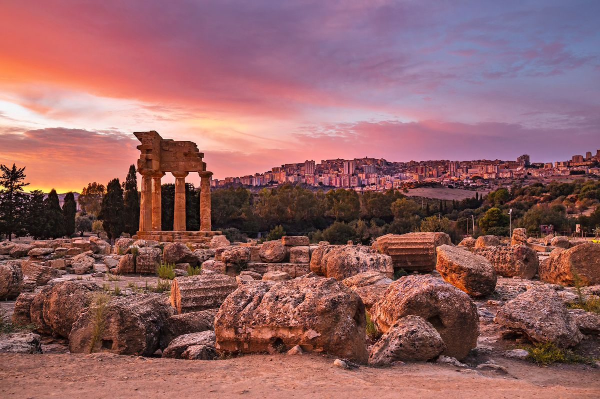
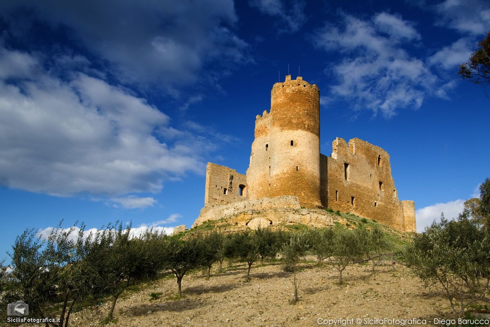
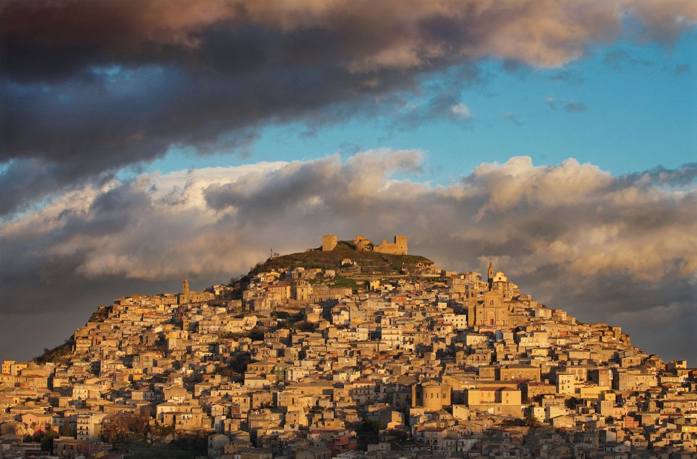
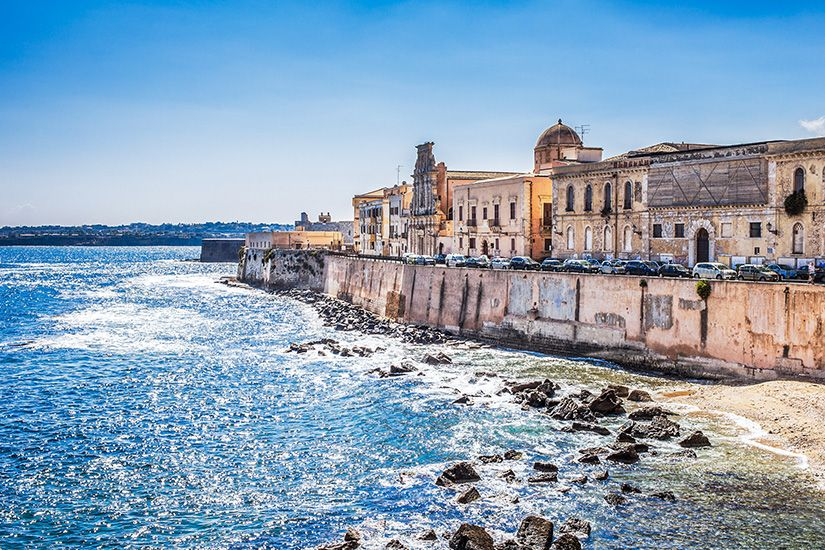
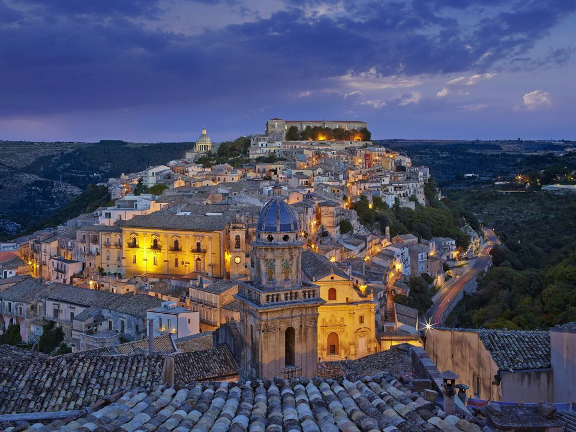

Un viaggio fotografico tra le piazze storiche, i monumenti barocchi, le attività e i panorami mozzafiato dell'isola.
La piazza in Sicilia non è solo uno spazio urbano, ma il cuore pulsante della vita sociale, incorniciata da architetture monumentali che spaziano dal barocco al neoclassico.

Agrigento è una città collinare sulla costa sudoccidentale della Sicilia. È nota per le rovine dell'antica città di Akragas e la Valle dei Templi, un vasto sito archeologico con templi greci ben conservati.

Caltanissetta futrasformata in feudo dai Normanni, dopo varie vicissitudini passò nel 1405 sotto il dominio dei Moncada di Paternò, che furono i titolari della contea di Caltanissetta fino al 1812; della nobile famiglia rimane il secentesco Palazzo Moncada, in stile barocco.

Enna, capoluogo di provincia più alto d'Italia, fu denominata Castrogiovanni fino al 1927, anno in cui riprese l'antico nome di Enna. La città è stata definita Urbs Inexpugnabilis dai romani per la sua imprendibilità.

Siracusa è una città sulla costa ionica della Sicilia. È nota per le rovine dell'antichità. Il centrale Parco Archeologico della Neapolis racchiude l'anfiteatro romano, il Teatro Greco e l'Orecchio di Dionisio, una grotta scavata nel calcare a forma di orecchio umano.

Ragusa è un comune italiano di 74 183 abitanti, capoluogo dell'omonimo libero consorzio comunale, in Sicilia. Nel 1693 un devastante terremoto causò la distruzione quasi totale dell'intera città, mietendo più di cinquemila vittime.